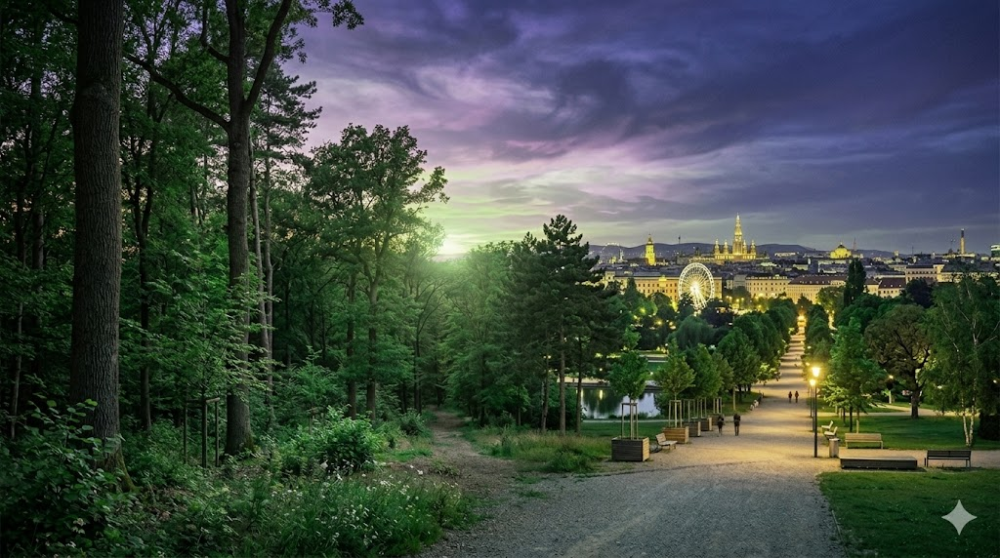

Einleitung: Das Aurora-Projekt
Willkommen auf der Plattform von Projekt Aurora. Diese Plattform ist mehr als ein digitales Archiv: Sie ist eine transdisziplinäre Brücke, auf der Forstwissenschaft und Softwareentwicklung mit künstlerischer Sensibilität und Tiefenpsychologie zusammenkommen. Unser Ziel ist es, das verborgene grüne Netzwerk unserer Umwelt zu entschlüsseln, von den unberührten Ökosystemen der Tiefenwälder bis hin zur Resilienz urbaner Bäume, die sich in Metropolen wie Wien Stück für Stück den Asphalt zurückerobern.
Mit moderner Software-Architektur (Java/Spring Boot) und interaktiven Eco-Simulationen machen wir dabei etwas sichtbar, das sonst leicht übersehen wird: biologische Kommunikation. Bäume senden zum Beispiel chemische Botenstoffe aus, sogenannte Terpene (flüchtige Duftstoffe, die unter anderem auch das menschliche Immunsystem beeinflussen können). Wir verstehen solche Signale als eine Art Zeichen im Sinne der Biosemiotik, jener Lehre, die untersucht, wie Lebewesen sich über Zeichen verständigen. Mehr dazu, mit direktem Bezug zum Unbewussten, finden Sie im Bereich Wald und Kunst. So wird aus Projekt Aurora ein Werkzeug, das informiert und zugleich beruhigt, und das kritisch nach echter Begrünung fragt: Grünflächen, die wirklich Platz für tiefe Wurzeln bieten, statt nur an der Oberfläche grün zu wirken. Mehr dazu im Bereich Bäume in der Stadt.
Die Plattform gliedert sich in fünf Bereiche: Infos bündelt dieses Magazin sowie die Sektionen Bäume in der Stadt, Deep Woods und Wald und Kunst; Wissenschaften widmet sich Gesundheit, Waldkrankheiten und Klima; Wirtschaft beleuchtet Ressourcen und Holzwirtschaft kritisch; und im Bereich Eco-Simulation können Sie selbst einen digitalen Wald gestalten. Jede gespeicherte Erkenntnis läuft in der Merkliste zusammen, Ihrem persönlichen, exportierbaren Forschungsprotokoll.
Das geheime Netzwerk der Wiener Bäume
Unter dem Asphalt Wiens rauscht ein stilles Gespräch. Bäume sind keine isolierten Wesen – sie verbinden sich über Myzelfäden zu einem unterirdischen Netzwerk, das Nährstoffe, Warnsignale und sogar so etwas wie kollektive Fürsorge weiterleitet...
Weiterlesen →Algorithmen statt Äxte
Kann Code das Flüstern des Waldes vorhersagen? Die Integration von Python erlaubt es, die grüne Zukunft als interaktives digitales Gemälde zu simulieren...
Weiterlesen →